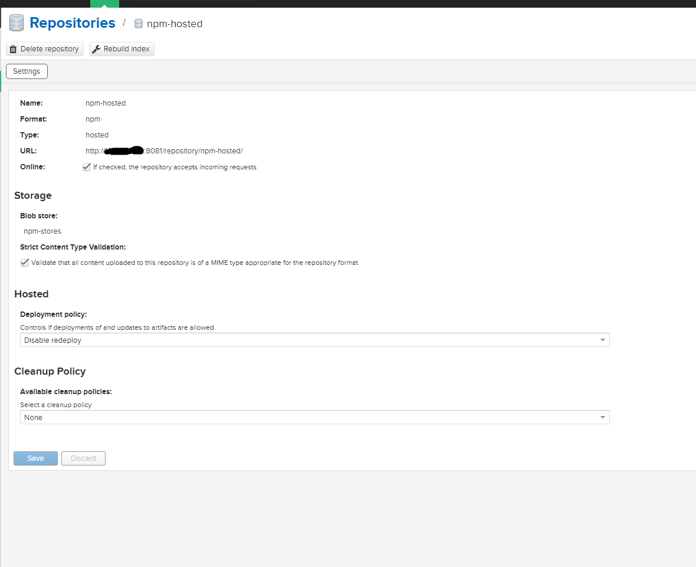
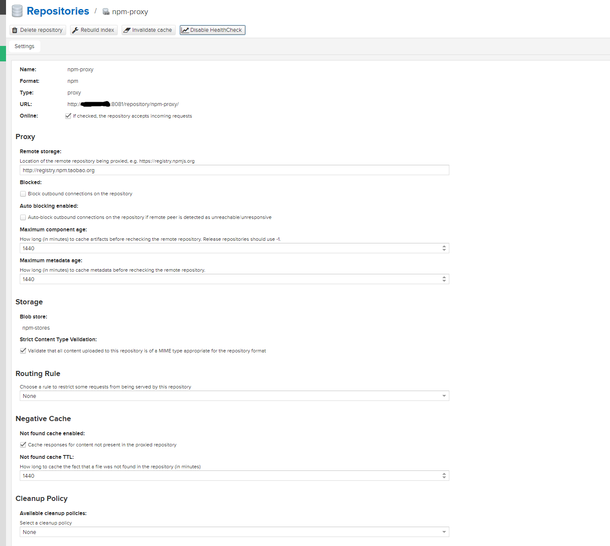
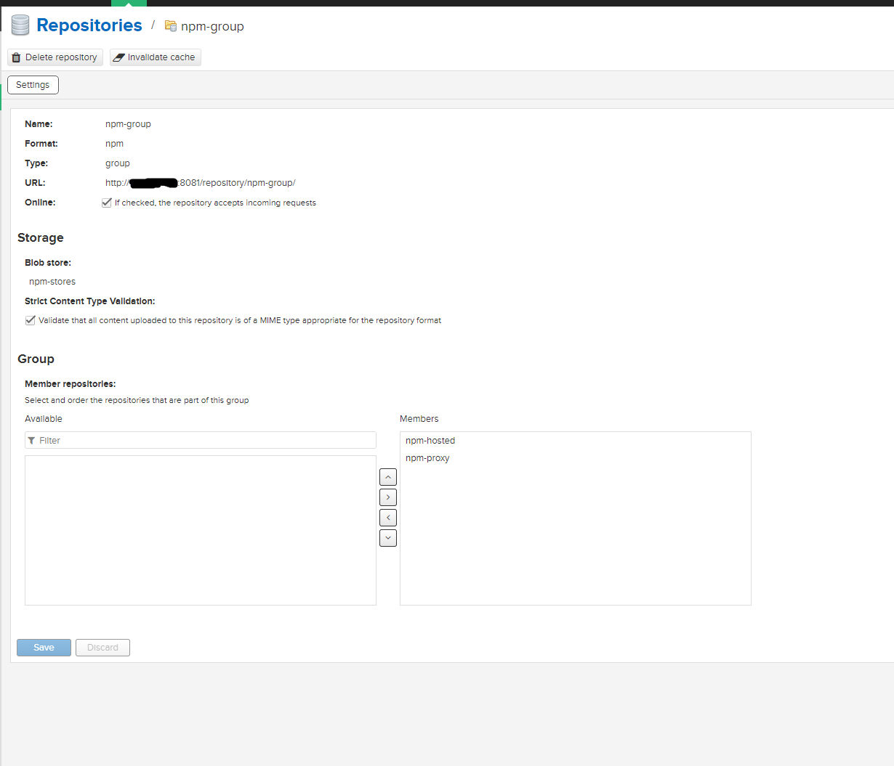

前端私服搭建
准备工作
环境准备：
- 镜像仓库：nexus 3.11
- nodejs版本：10.16.0
- yarn版本：1.22.4
- npm版本：6.9.0
nexus3 仓库设置和用户设置
仓库设置
前端仓库创建如下：
- npm-hosted: 私有的仓库，存储自己开发的自定义组件。

- npm-proxy：公共仓库代理，这里代理的是淘宝的镜像仓库。

- npm-group：整合上述两个仓库信息，作为一个仓库对外使用。

使用管理员账户进行添加。添加完成后，下面需要添加角色和用户，并设置权限。
用户设置
首先，设置一个前端专属角色，添加npm的相关授权，基本信息如下：

然后添加用户npm-user，在用户层面添加npm和nx的相关角色，保证推送数据的时候可以正常上传，基本信息如下：

其次，在Realms选项中，激活npm Bearer Token Realm，如下图：

最后，在匿名登录Anonymous部分配置，勾选Allow anonymous users to access the server
*，然后username选择我们创建的npm-user用户，Realm选择npm Bearer Token Realm*，最后保存即可。如下图：

全部设置完成后，基本信息如下：
- 前端私服：http://192.168.123.202:8081/repository/npm-group/
- 前端推送私服：http://192.168.123.202:8081/repository/npm-hosted/
- 用户名密码：npm-user hoteam@2019
- 用户对应邮箱信息：lisongyang@hoteamsoft.com
前端配置
选择workflow-bpmn-modeler这个项目进行配置，先从github上拉取到本地，然后对package.json进行修改，如下：
{
"name": "ht-workflow-bpmn-modeler",
"version": "0.2.52",
....
"publishConfig": {
"registry": "http://192.168.123.202:8081/repository/npm-hosted/"
},
...
}这里主要是修改组件名称，修改发布时的仓库地址。
npm设置
首先设置yarn的远程仓库，变更为我们之前配置的私有仓库，如下：
// 如果存在已经设置的registry的参数，需要先进行删除
$ npm config delete registry
$ npm config set registry http://192.168.123.202:8081/repository/npm-group/
这时候在对应的位置上（window中C:\Users\ht路径下）生成了.npmrc文件，内容如下：
registry=http://192.168.123.202:8081/repository/npm-group/
然后登陆这个私服的信息，操作如下：
$ npm login
Username: npm-user
Password: (输入密码，不显示)
Email: (this IS public) lisongyang@hoteamsoft.com
操作完成后，.npmrc会产生变更，内容如下：
registry=http://192.168.123.202:8081/repository/npm-group/
//192.168.123.202:8081/repository/npm-group/:_authToken=NpmToken.fdf0237e-72e9-3e99-91fa-9f513958689b
最后需要对.npmrc文件配置，添加两个选项，最终结果如下：
registry=http://192.168.123.202:8081/repository/npm-group/
//192.168.123.202:8081/repository/npm-group/:_authToken=NpmToken.fdf0237e-72e9-3e99-91fa-9f513958689b
always-auth=true
strict-ssl=false
或者在命令行中进入如下设置：
npm config set always-auth true
npm config set strict-ssl false
设置完成后，进入npm测试。
npm推送测试
// 添加依赖信息
$ npm install
// 测试前端运行
$ npm run serve
// 测试推送
$ npm publish
npm拉取测试
$ npm install ht-workflow-bpmn-modeler@0.2.52 --verbose
npm问题
- 错误信息：
npm ERR! code E401
npm ERR! Unable to authenticate, need: BASIC realm="Sonatype Nexus Repository Manager"
npm ERR! A complete log of this run can be found in:
npm ERR! D:\dev\FrontEnd\nodejs\node_cache\_logs\2020-12-01T08_09_04_980Z-debug.log
解决方式：临时未确定，先使用yarn进行推送。
- 错误信息：
npm ERR! code ECONNRESET
npm ERR! errno ECONNRESET
npm ERR! network request to http://192.168.123.202:8081/repository/npm-hosted/ht-workflow-bpmn-modeler failed, reason: read ECONNRESET
npm ERR! network This is a problem related to network connectivity.
npm ERR! network In most cases you are behind a proxy or have bad network settings.
npm ERR! network
npm ERR! network If you are behind a proxy, please make sure that the
npm ERR! network 'proxy' config is set properly. See: 'npm help config'
npm ERR! A complete log of this run can be found in:
npm ERR! D:\dev\FrontEnd\nodejs\node_cache\_logs\2020-12-01T08_27_31_872Z-debug.log
解决方式：临时未确定，先使用yarn进行推送。
yarn设置
在yarn设置以前必须先对npm进行设置，否则会出现拉取不到的情况。
首先设置yarn的远程仓库，然后通过yarn登录镜像仓库，最后进行测试。
// 设置远程仓库
$ yarn config set registry http://192.168.123.202:8081/repository/npm-group/
// 登录远程仓库
$ yarn login
yarn login v1.22.4
info npm username: npm-user
info npm email: lisongyang@hoteamsoft.com
Done in 0.06s.
登录后，会在对应的位置上（window中C:\Users\ht路径下）生成了.yarnrc文件，内容如下：
registry "http://192.168.123.202:8081/repository/npm-group/"
email lisongyang@hoteamsoft.com
username npm-user
生成了以后。可以对项目进行测试。
yarn推送测试
// 添加依赖信息
$ yarn install
// 测试前端运行
$ yarn run serve
// 推送
$ yarn publish
运行结果如下：
$ yarn publish
yarn publish v1.22.4
[1/4] Bumping version...
info Current version: 0.2.54
question New version: 0.2.54
[2/4] Logging in...
info npm username: npm-user
info npm email: lisongyang@hoteamsoft.com
question npm password:
success Logged in.
[3/4] Publishing...
$ yarn build
yarn run v1.22.4
$ cross-env NODE_ENV=build vue-cli-service build --target lib --inline-vue --entry package/index.js
\ Building for production as library (commonjs,umd,umd-min)...
DONE Compiled successfully in 11895ms 4:39:33 PM
DONE Compiled successfully in 11922ms 4:39:33 PM
DONE Compiled successfully in 11955ms 4:39:33 PM
File Size Gzipped
dist\ht-workflow-bpmn-modeler.umd.min.js 3012.16 KiB 525.86 KiB
dist\ht-workflow-bpmn-modeler.umd.js 3012.16 KiB 525.86 KiB
dist\ht-workflow-bpmn-modeler.common.js 3011.74 KiB 525.74 KiB
Images and other types of assets omitted.
Done in 15.04s.
$ yarn lib && yarn cdn && yarn demo
yarn run v1.22.4
$ cross-env NODE_ENV=lib vue-cli-service build
- Building for production...
DONE Compiled successfully in 7864ms 4:39:45 PM
File Size Gzipped
docs\lib\0.2.54\js\chunk-libs.js 2825.71 KiB 525.03 KiB
docs\lib\0.2.54\js\chunk-elementUI.js 1883.20 KiB 319.34 KiB
docs\lib\0.2.54\js\app.js 403.72 KiB 33.41 KiB
docs\lib\0.2.54\js\chunk-vue.js 240.43 KiB 65.09 KiB
docs\lib\0.2.54\js\runtime.js 6.12 KiB 1.64 KiB
Images and other types of assets omitted.
DONE Build complete. The docs\lib\0.2.54 directory is ready to be deployed.
INFO Check out deployment instructions at https://cli.vuejs.org/guide/deployment.html
Done in 10.95s.
yarn run v1.22.4
$ cross-env NODE_ENV=cdn vue-cli-service build
/ Building for production...
DONE Compiled successfully in 7697ms 4:39:56 PM
File Size Gzipped
docs\cdn\0.2.54\js\chunk-libs.js 2825.71 KiB 525.03 KiB
docs\cdn\0.2.54\js\chunk-elementUI.js 1883.20 KiB 319.34 KiB
docs\cdn\0.2.54\js\app.js 403.72 KiB 33.41 KiB
docs\cdn\0.2.54\js\chunk-vue.js 240.43 KiB 65.09 KiB
docs\cdn\0.2.54\js\runtime.js 6.20 KiB 1.70 KiB
Images and other types of assets omitted.
DONE Build complete. The docs\cdn\0.2.54 directory is ready to be deployed.
INFO Check out deployment instructions at https://cli.vuejs.org/guide/deployment.html
Done in 10.78s.
yarn run v1.22.4
$ cross-env NODE_ENV=demo vue-cli-service build
/ Building for production...
DONE Compiled successfully in 7510ms 4:40:07 PM
File Size Gzipped
docs\demo\js\chunk-libs.js 2825.71 KiB 525.03 KiB
docs\demo\js\chunk-elementUI.js 1883.20 KiB 319.34 KiB
docs\demo\js\app.js 404.26 KiB 33.55 KiB
docs\demo\js\chunk-vue.js 240.44 KiB 65.09 KiB
docs\demo\js\runtime.js 6.14 KiB 1.66 KiB
Images and other types of assets omitted.
DONE Build complete. The docs\demo directory is ready to be deployed.
INFO Check out deployment instructions at https://cli.vuejs.org/guide/deployment.html
Done in 10.83s.
success Published.
[4/4] Revoking token...
success Revoked login token.
Done in 57.41s.
yarn拉取测试
在目标项目中，使用yarn进行拉取。在操作之前必须删除yarn.lock或者package-lock.json再进行操作：
$ yarn add ht-workflow-bpmn-modeler@0.2.54
yarn add v1.22.4
[1/4] Resolving packages...
[2/4] Fetching packages...
info fsevents@1.2.13: The platform "win32" is incompatible with this module.
info "fsevents@1.2.13" is an optional dependency and failed compatibility check. Excluding it from installation.
info fsevents@2.1.3: The platform "win32" is incompatible with this module.
info "fsevents@2.1.3" is an optional dependency and failed compatibility check. Excluding it from installation.
[3/4] Linking dependencies...
warning " > babel-core@7.0.0-bridge.0" has unmet peer dependency "@babel/core@^7.0.0-0".
warning " > ant-design-vue@1.6.2" has unmet peer dependency "vue@>=2.6.0".
warning "ant-design-vue > @ant-design/icons-vue@2.0.0" has unmet peer dependency "vue@>=2.5.0".
warning " > cache-loader@4.1.0" has unmet peer dependency "webpack@^4.0.0".
warning " > element-ui@2.13.2" has unmet peer dependency "vue@^2.5.17".
warning " > viser-vue@2.4.8" has unmet peer dependency "vue@>=1".
warning " > vue-svg-component-runtime@1.0.1" has unmet peer dependency "vue@>= 2.5.0".
warning " > vuex@3.4.0" has unmet peer dependency "vue@^2.0.0".
warning " > terser-webpack-plugin@1.4.3" has unmet peer dependency "webpack@^4.0.0".
warning "@vue/cli-plugin-unit-jest > vue-jest@3.0.5" has unmet peer dependency "vue@^2.x".
warning " > vue-loader@15.9.2" has unmet peer dependency "webpack@^3.0.0 || ^4.1.0 || ^5.0.0-0".
warning " > @vue/test-utils@1.0.3" has unmet peer dependency "vue@2.x".
warning " > babel-loader@7.1.5" has incorrect peer dependency "babel-core@6".
warning " > babel-loader@7.1.5" has unmet peer dependency "webpack@2 || 3 || 4".
warning " > eslint-loader@1.9.0" has incorrect peer dependency "eslint@>=1.6.0 <5.0.0".
warning " > extract-text-webpack-plugin@3.0.2" has unmet peer dependency "webpack@^3.1.0".
warning " > babel-loader@7.1.5" has incorrect peependency "webpack@^2.0.0 || ^3.0.0 || ^4.0.0".warning " > babel-loader@7.1.5" has unmet peer d" has unmet peer dependency "webpack@^2.0.0 || ^3.0.0 || ^4.0.0"warning " > eslint-loader@1.9.0" has incorrect pt peer dependency "webpack@1 || ^2 || ^2.1.0-beta || ^2.2.0-rc |warning " > extract-text-webpack-plugin@3.0.2" hpendency "webpack@^2.0.0 || ^3.0.0 || ^4.0.0".warning " > file-loader@1.1.11" has unmet peer d
warning " > friendly-errors-webpack-plugin@1.7.0
warning " > html-webpack-plugin@2.30.1" has unme
warning " > less-loader@4.1.0" has unmet peer de
warning " > rollup-plugin-babel@3.0.7" has incor
warning " > rollup-plugin-vue@3.0.0" has unmet p
warning "rollup-plugin-vue > vue-template-valida
warning " > sass-loader@7.3.1" has unmet peer de
warning " > uglifyjs-webpack-plugin@1.3.0" has u
warning " > vue-svg-icon-loader@2.1.1" has unmet
warning "vue-svg-icon-loader > vue-svg-component
warning " > webpack-dev-server@2.11.5" has unmet
warning "webpack-dev-server > webpack-dev-middle
[4/4] Building fresh packages...
success Saved 1 new dependency.
info Direct dependencies
└─ ht-workflow-bpmn-modeler@0.2.53
info All dependencies
└─ ht-workflow-bpmn-modeler@0.2.53
$ opencollective-postinstall
Thank you for using vue-antd-pro!
If you rely on this package, please consider sup
> https://opencollective.com/ant-design-pro-vue/
Done in 12.40s.总结
主要还是使用yarn进行拉取和推送，npm publish时存在无法推送的问题！
如果执行yarn publish的时候，还是出现无法推送的情况，包括出现在yarn install时出现401错误的时候，尝试删除”.npmrc”文件中的_authToken所在行，重新执行“npm login”命令。
番外篇：关于Dockerfile的重写
# 第一层面构建，打包前端代码
#### 1. 指定node镜像版本
FROM node:10.16.0 AS builder
# 添加日期信息，如果需要更新所有缓存层，更新该处日期信息即可
ENV REFRESH_DATE 2020-12-02_11:11
# 2. 指定编译的工作空间
WORKDIR /home/node/app
# 3. 设置授权信息，本地开发机登录后获取私有镜像的authToken信息，放入.npmrc
# NpmToken一行可以通过本地的机器使用npm login命令进行获取
RUN touch /home/node/app/.npmrc && mkdir /home/node/app/node_global && mkdir /home/node/app/node_cache && echo "registry=http://192.168.123.202:8081/repository/npm-group/ \n\
//192.168.123.202:8081/repository/npm-group/:_authToken=NpmToken.a36e083f-d4b8-3e73-a98e-9dc1e5f61ccd \n\
sass_binary_site=https://npm.taobao.org/mirrors/node-sass \n\
always-auth=true \n\
strict-ssl=false" >> /home/node/app/.npmrc
RUN touch /home/node/app/.yarnrc && echo "registry \"http://192.168.123.202:8081/repository/npm-group/\" \n\
email lisongyang@hoteamsoft.com \n\
lastUpdateCheck 1606979147039 \n\
\"registry=http://192.168.123.202:8081/repository/npm-group/\" true \n\
sass_binary_site \"http://cdn.npm.taobao.org/dist/node-sass\" \n\
username npm-user" >> /home/node/app/.yarnrc
# 4. 安装打包需要的yarn工具
RUN npm install -g yarn
# 对yarn设置淘宝镜像
#RUN yarn config set registry http://192.168.123.202:8081/repository/npm-group/
#RUN yarn config set disturl https://npm.taobao.org/dist
# 5. 添加package.json
COPY package.json /home/node/app/
# 6. 安装依赖信息
RUN yarn install --verbose
# 7. 添加剩余代码到工作空间
COPY . /home/node/app
# 8. 编译代码
RUN yarn run build
# 第二层面构建
#### 1.拉取自定义镜像名称
FROM 192.168.123.202:5000/base_frontend:0.0.1
# 2.将打包后的代码复制到运行位置
COPY --from=builder /home/node/app/dist /var/www
# 3.启动nginx
ENTRYPOINT ["nginx","-g","daemon off;"]
其重点在于，.npmrc文件需要添加
always-auth=true
strict-ssl=false
yarn在执行install命令的时候才能正常使用。